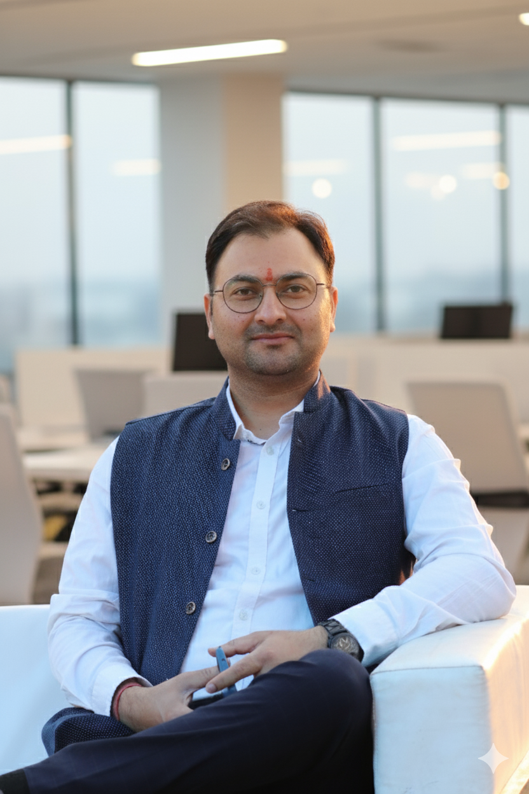

Ph.D. · Postdoc (USA) · B.Tech (ECE)
Guest Faculty, Dept. of AIDE, IIIT Kota — bridging high-energy physics instrumentation, FPGA design, and AI-driven data science.

Add photo.jpgI am a researcher and faculty member with 10+ years of experience at the intersection of experimental physics, electronics engineering, and computing sciences. My journey began with neutron detector design for Indian fast reactors and grew to include frontier particle physics experiments at SuperKEK (Japan) and the upcoming Electron-Ion Collider (BNL, USA).
As a Postdoctoral Fellow at the University of Hawaiʻi at Mānoa (IDLab, 2020–2024), I developed readout electronics for the Belle II iTOP Cherenkov detector and led FPGA firmware development for next-generation EIC particle identification systems.
Currently at IIIT Kota's Dept. of AIDE, I teach and mentor across Quantum Computing, Cryptography & Cybersecurity, Applied AI, and Data Science — connecting deep hardware expertise with modern CS frontiers.
From silicon carbide neutron sensors to frontier HEP detectors — hardware that touches fundamental physics.
Live data fetched from Semantic Scholar · fallback to latest known values
Source: Google Scholar · View full profile ↗
Open to collaborations, research discussions, and permanent faculty or research scientist positions in ECE, Physics, CS, or AIDE departments.